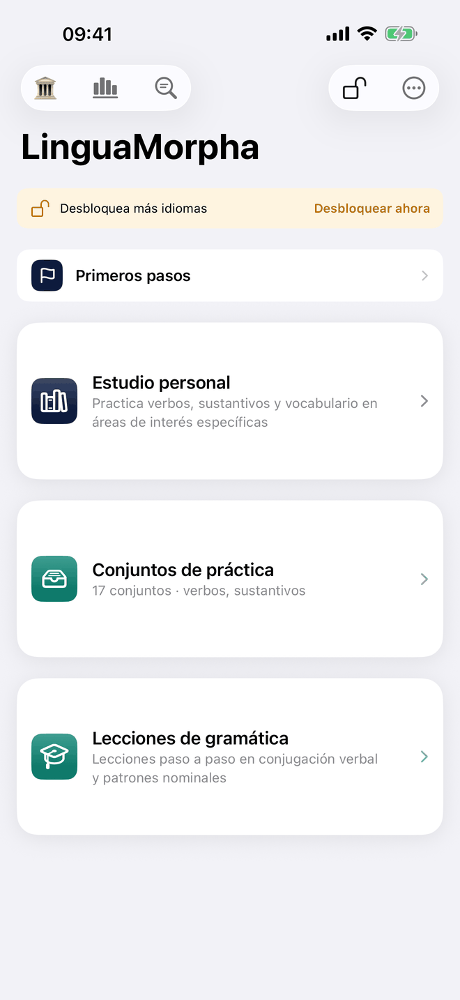
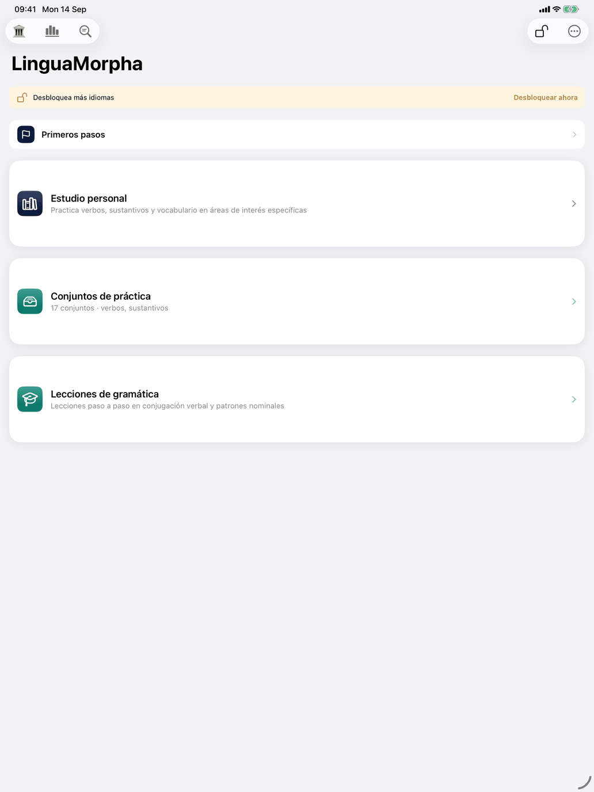
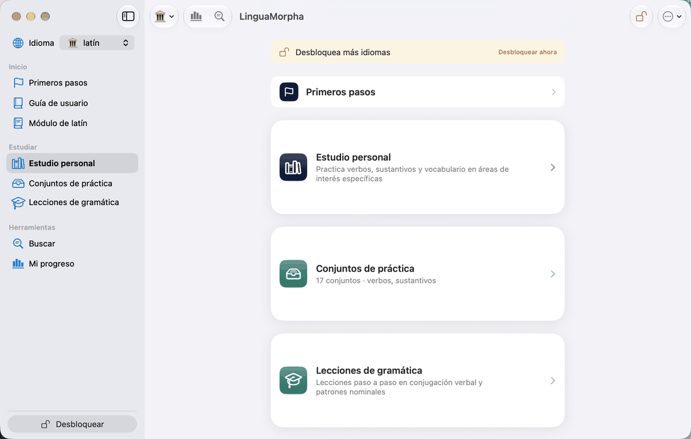

La pantalla principal



Al abrir la aplicación llegas a la pantalla principal. En iPhone y iPad es la pantalla titulada LinguaMorpha; en el Mac es una ventana con una barra lateral a la izquierda y el área elegida a la derecha. Desde aquí eliges cómo estudiar y accedes a las herramientas generales.
En iPhone y iPad, mientras el interruptor Abrir la app en esta página de la página Primeros pasos esté activado, la aplicación se abre primero en Primeros pasos. Desactívalo cuando ya no lo necesites; la página sigue en la pantalla principal. En el Mac la misma página es Inicio, y la aplicación se abre siempre allí.
En iPhone y iPad
Arriba está el aviso de la prueba (consulta La forma de la plataforma) y, cuando la hay, la línea de actualización (consulta Actualizaciones y valoraciones más abajo), luego una fila Primeros pasos y después unas tarjetas grandes. Las tarjetas que ves dependen del curso que estudias:
- Lecciones de gramática — lecciones paso a paso en un orden fijo.
- Teoría — la gramática del curso en un solo lugar, por tipo de palabra. Véase Teoría.
- Conjuntos de práctica — sesiones ya preparadas que haces como una unidad. La tarjeta indica cuántos conjuntos tiene el curso y qué tipos de práctica abarcan. Puedes crear los tuyos y compartir conjuntos con otro estudiante.
- Estudio personal — tú decides qué verbos, sustantivos, adjetivos, adverbios, pronombres, preposiciones, numerales, frases y demás vocabulario entran en juego, y qué ejercicio hacer. Consulta Estudio personal.
- Pruebas — todas las pruebas de tu nivel, por clase de palabra, cada una con la teoría a un toque. Consulta Pruebas.
- Análisis lingüístico — explora la estructura del catálogo y expórtala.
Si el curso está bloqueado (la prueba ha terminado y no lo has comprado), las tarjetas abren la tienda.
Barra de herramientas, lado izquierdo
- La etiqueta — la bandera del curso que estudias, el esquema en uso y tu nivel en él, por ejemplo A1; con más de un alumno, delante va el nombre del alumno. Tócala para abrir Esquema y nivel, donde eliges el alumno, el curso y su esquema, y el nivel; consulta Niveles.
- El icono de gráfico — abre Mi progreso.
Barra de herramientas, lado derecho
- Desbloquear — abre la tienda: cada curso con su precio (o Adquirido), Desbloquear todos los idiomas, Restaurar compra anterior y Canjear código para un código de oferta que hayas recibido.
- El menú ⋯ — Primeros pasos, Ayuda (con Esta pantalla, la Guía de usuario y la guía del curso que estudias), Ajustes y Acerca de.
El botón Buscar
La lupa redonda abajo a la derecha está en todas las pantallas, no solo en esta. Abre Buscar sobre la pantalla en la que estás; deslízalo hacia abajo y vuelves a donde estabas. En un iPad con teclado, ⇧⌘F hace lo mismo. Se oculta mientras hay un ejercicio en curso: un ejercicio que pide una forma cuya respuesta está a una búsqueda de distancia no mide nada.
En el Mac
La barra lateral sustituye a las tarjetas y a los iconos de la barra de herramientas. De arriba abajo:
- Busca una forma — un campo de búsqueda: escribe cualquier forma y el panel derecho muestra qué es (consulta Buscar). Vacía el campo y vuelves a donde estabas.
- La etiqueta — la bandera del curso, el esquema en uso y tu nivel, con el nombre del alumno cuando hay varios. Haz clic en ella para abrir la ventana Esquema y nivel; consulta Niveles. Todo lo que hay debajo depende de ella.
- Inicio — la página de inicio, donde se abre la aplicación: una tarjeta para cada forma de estudiar. ⇧⌘H te lleva de vuelta desde cualquier pantalla, y también la flecha atrás en la parte superior de cada sección: Atrás, Atrás, … siempre termina en Inicio.
- Estudiar — Lecciones de gramática, Teoría, Conjuntos de práctica, Estudio personal y Pruebas; Lecciones de gramática y Conjuntos de práctica si el curso los tiene.
- Herramientas — Análisis lingüístico, Trampas (español) y Mi progreso.
- Ayuda — Guía de usuario y la guía del curso que estudias. Las guías se abren en el panel derecho.
- Al pie, la línea de actualización cuando la hay (consulta Actualizaciones y valoraciones más abajo), la cuenta atrás de la prueba mientras dura, y el botón Desbloquear (Compras cuando ya lo tienes todo).
Desde cualquier pantalla, Edición ▸ Buscar… (⇧⌘F) abre Buscar en una ventana propia junto a la ventana principal, con el campo vacío — útil para buscar mientras lees. ⌘F va al campo de búsqueda de la pantalla en la que estás, o al campo Buscar de la barra lateral si la pantalla no tiene uno. Buscar no está disponible mientras hay un ejercicio en curso.
Ajustes y Acerca de están en el menú LinguaMorpha, no en la barra lateral; consulta En el Mac.
Actualizaciones y valoraciones
Una versión más reciente. Más o menos una vez al día, la aplicación pregunta a la App Store qué versión tiene. Si es más reciente que la que usas, una línea lo indica —La versión 1.1.0 está en la App Store— con Actualizar, que abre la página de la App Store, y ✕, que la oculta hasta que aparezca una versión aún más reciente. La App Store suele actualizar las apps por sí sola; la línea es para cuando eso está desactivado. Solo cuenta el número de versión, así que la línea aparece una vez por publicación, no con cada compilación.
Una valoración. De vez en cuando, al terminar una ronda que ha ido bien, la aplicación puede pedirte que la valores, en la ventana propia de Apple. Solo lo hace cuando ya la has usado un tiempo: al menos una semana, varias sesiones en días distintos y de tipos distintos, y después de haber recorrido bien la aplicación. Como mucho una vez por versión y no más de unas tres veces al año. Apple decide si la ventana aparece de verdad, y puedes cerrarla sin más.
Convenciones de toda la aplicación
Ayuda en cada pantalla. Las pantallas se explican solas: toca el botón Ayuda en la parte superior de una sección, o el ? de la barra de herramientas, para ver una breve hoja de ayuda sobre esa pantalla. Muchas filas de menú ofrecen una segunda vía: mantén pulsada una fila (alrededor de medio segundo) y obtendrás una hoja de ayuda sobre esa fila en lugar de sobre toda la pantalla. Un toque rápido siempre hace lo habitual de la fila.
Informar de un problema. Mantén pulsado un botón Ayuda o un ? para empezar un correo sobre esa pantalla, con la versión de la aplicación y el nombre de la pantalla ya en el asunto. Añade una captura de pantalla si puedes.
Vistas de detalle. Muchas pantallas muestran palabras en una lista. Al tocar una palabra se abre su vista de detalle: traducción, formas, nivel, temas y frases de ejemplo, si el curso las tiene.
Volver atrás. La flecha ‹ de arriba a la izquierda te lleva un paso atrás, a la pantalla de la que venías. En el Mac, al elegir una fila de la barra lateral saltas directamente a esa área.